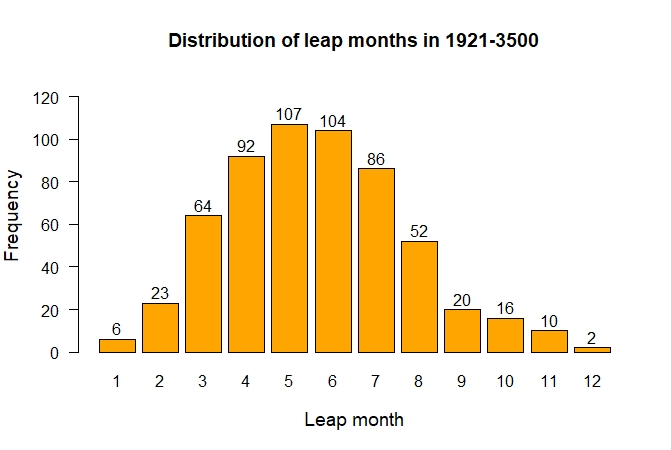
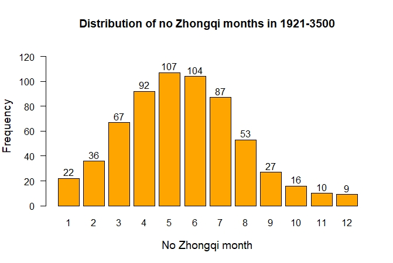

First draft: February 3, 2026
Since the adoption of true solar terms in 1645, leap months after the first and 12th months have not occurred yet. I used the rules of modern Chinese calendar GB/T 33661-2017 to find all leap months from now to 3500. I find that the leap months after the first month only occur 6 times, and the leap months after the 12th month only occur twice. The first leap month after the first month will occur in 2262, and the first leap month after the 12th month will occur in 3359 (Chinese year 3358).
The following gives a detailed explanation of why the leap months after the first and the 12th months are extremely rare. The readers are assumed to already know about the rules of Chinese calendar explained on the Chinese calendar rule page. The complete rules and the associated concepts will not be repeated here.
All calculations mentioned on this page were carried out using my Western-Chinese calendar conversion python package. Most of the calculations are shown in the last section of this Jupyter notebook.
For simplicity, I use the symbol Ny to represent the Chinese year whose New Year day is closest to January 1 in the Western year y, and Sy to represent the sui y, which covers the period from month 11 in Ny-1 to the day before month 11 in Ny. For example, N1984 was from Feb 2, 1984 to Feb 19, 1985; S1984 was from Dec 4, 1983 to Dec 21, 1984.
There are 582 leap months in S1921 – S3500. The following figure shows the distribution of leap months in this period.

This plot confirms that the leap months after the first and 12th month are indeed the rarest. There are only 6 leap months after the first month and 2 leap months after the 12th month in this period.
The necessary condition for a leap month after the 12th month is having a lunar month without a major solar term between Z12 (around Jan 20) and Z1 (around Feb 19), and the necessary condition for a leap month after the first month is having a lunar month without a major solar term between Z1 (around Feb 19) and Z2 (around March 21). The usual explanation for the rarity of leap months after the first and 12th months is that the Earth passes perihelion in early January in recent centuries and hence Earth's motion is relatively fast from December to February. The number of days between Z12 and Z1 and the number of days between Z1 and Z2 are relatively short, and it's relatively rare to have a lunar month occurring between these major solar terms. However, the following analysis shows that this is only part of the reason.
The table below lists the average number of days between two successive major solar terms in S1921 – S3500.
| Interval | Average number of days |
|---|---|
| Z11-Z12 | 29.483 |
| Z12-Z1 | 29.526 |
| Z10-Z11 | 29.692 |
| Z1-Z2 | 29.805 |
| Z9-Z10 | 30.095 |
| Z2-Z3 | 30.256 |
| Z8-Z9 | 30.598 |
| Z3-Z4 | 30.760 |
| Z7-Z8 | 31.065 |
| Z4-Z5 | 31.187 |
| Z6-Z7 | 31.366 |
| Z5-Z6 | 31.408 |
The data indeed show a strong correlation between the average number of days between two successive major solar terms and the frequency of leap months. The longest average number of days is between Z5 and Z6, which predicts that leap months after the 5th month should be the most common and it's indeed the case. Based on the number of days data shown above, we may predict that the order of the frequency of leap months from the most common to the least common are after the 5th, 6th, 4th, 7th, 3rd, 8th, 2nd, 9th, 1st, 10th, 12th and 11th months. This order is mostly consistent with Figure 1 except that it's completely wrong for the leap months after the first and the 12th months. The average number of days between Z11 and Z12 is the smallest, but leap months after the 11th month are not the rarest. This shows that the number of days between two successive solar terms alone is not enough to explain the rarity of leap months after the first and 12th months. There is something else going on.
I mention above that the absence of major solar term in a lunar month is only a necessary condition for the month to be a leap month. The rules of the modern Chinese calendar stipulate that a leap month is the first lunar month after the winter solstice that doesn't contain a major solar term in a leap sui. Recall that a regular sui refers to a sui having 12 lunar months, and a leap sui refers to a sui having 13 lunar months. Hereafter, I will refer to the lunar month without a major solar term as a no Zhongqi month. It's the occurrence of lunar months with two major solar terms and fake leap months that complicates the situation. Recall that a fake leap month refers to a no Zhongqi month that is not a leap month.
No Zhongqi months between Z12 and Z1 and between Z1 and Z2 do occur in recent centuries. Let's look at a few cases to gain an insight into the situation.
A no Zhongqi month occurred between Z12 and Z1 in S1871. It could be a leap month after the 12th month except that it occurred in a regular sui and so it was a fake leap month. In this case, both Z11 and Z12 fell in month 11, leaving the following month without a major solar term. Another no Zhongqi month occurred between Z1 and Z2 in S1985. It could be a leap month after the first month except that it also occurred in a regular sui and it was again a fake leap month. In this case, both Z11 and Z12 fell in month 11 and Z1 fell in month 12, leaving the following month without a major solar term. Yet another no Zhongqi month will occur between Z1 and Z2 in S2034. It could be a leap month after the first month. Although this time it will occur in a leap sui, it will be the second month after the winter solstice without a major solar term. Hence it will be a fake leap month. In S2034, both Z10 and Z11 will fall on month 11, leaving the following month without a major solar term. Since it will be the first month after winter solstice without a major solar term, it will be a leap month. Then both Z12 and Z1 will fall on month 12, leaving the following month without a major solar term and becoming a fake leap month.
There will be no Zhongqi months occurring between Z1 and Z2 in N2053, N2129, N2148, N2167, N2205 and N2243. They will all be fake leap months. This pattern will break in N2262 when there will be a first leap month after the first month in more than 600 years. No Zhongqi months between Z12 and Z1 will occur in N2500, N2557, N2595, N2777, N2282, N2891 and N2986, but they will end up being fake leap months. Leap months after the 12th month won't occur until N3358.
Earth moving fast near perihelion not only makes no Zhongqi months around that time rare, but also increase the frequency of lunar months with two major solar terms and the accompanying fake leap months. The average value of a synodic month is 29.530589 days. When the average number of days between two major solar terms is less than this number, it's more likely for the two major solar terms to be in a lunar month than having a no Zhongqi month between the two major solar terms. From Table 1 we see that there are two intervals with the average length smaller than 29.53 days: Z11-Z12 and Z12-Z1. Thus it's more likely to have both Z11 and Z12 in a lunar month than having a no Zhongqi month between Z11 and Z12; it's more likely to have both Z12 and Z1 in a lunar month than having a no Zhongqi month between Z12 and Z1. Calculation shows that there are 17 lunar months with both Z11 and Z12 in S1921 – S3500 and 10 no Zhongqi months between Z11 and Z12 in the same period. Calculation also shows that there are 14 lunar months with both Z12 and Z1 in S1921 – S3500 and 9 no Zhongqi months between Z12 and Z1. These data confirm the theoretical expectation. The situation becomes very interesting when there is a lunar month having both Z11 and Z12 or having both Z12 and Z1.
Let's analyze the situation when a lunar month containing both Z11 and Z12. According to the rules of Chinese calendar, this lunar month is month 11 since it contains Z11. The average number of days between Z11 and Z12 is 29.48 days and a lunar month has either 29 or 30 days. It follows that Z11 must be near the beginning of month 11 and Z12 must be near the end of the month. It can be deduced that the month must be a regular sui since a leap sui must have Z11 occurring later than (about) the 19th day of month 11. A regular sui has 12 months and there are 12 major solar terms between Z11 and the following Z11. Since both Z11 and Z12 are in month 11, there are only 10 major solar terms (Z1-Z10) in the remaining 11 months. It follows that there must be a fake leap month in this sui. Let's denote the fake leap month by F, the month before it by F-1, the month following it by F+1 and so on. A fake leap month is a no Zhongqi month. As shown in Table 1, the average number of days between two successive major solar terms is between 29.48 and 31.41 days. It follows that there is a major solar term near the end of F-1 and a major solar term near the beginning of F+1. We know Z12 is near the end of month 11. F-1 could just be month 11, making F month 12 and it's between Z12 and Z1. However, the average number of days in Z12-Z1 is 29.53, which is relatively short and may fail to contain a lunar month. So the fake leap month may be pushed to between Z1 and Z2 or even later. An example of this case is the sui S1985 and the fake leap month was between Z1 and Z2. Another example is the sui S1871 and the fake leap month was between Z12 and Z1.
Let's now turn to the situation when a lunar month containing both Z12 and Z1. Let's denote this month by D, the month before it by D-1, the month following it by D+1 and so on. It can be deduced that Z12 is near the beginning of D and Z1 is near the end of it. There are two possibilities in this case.
The first possibility is that Z11 occurs near the beginning of D-1, making D month 12 in a regular sui. There are 12 major solar terms in this sui and 12 lunar months. Z11 is in month 11, Z12 and Z1 are in month 12. Hence Z2-Z10 must be in months 1-10 and we have 9 major solar terms in 10 lunar months and conclude that there must be a fake leap month. This fake leap month is likely to occur between Z1 and Z2 or later. An example is the sui S2148 and the fake leap month will be between Z1 and Z2.
The second possibility is that D-1 is a no Zhongqi month and Z11 occurs near the end of D-2. If this is the case, D-2 is month 11 in a leap sui. D-1, being the first no Zhongqi month after Z11 in a leap sui, is a leap month. D is again month 12. Having Z11 in month 11, Z12 and Z1 in month 12 means that Z2-Z10 must be in months 1-10. We again have 9 major solar terms in 10 lunar months and so there must be a second no Zhongqi month in the sui and it becomes a fake leap month. This fake leap month is again likely to occur between Z1 and Z2 or later. An example of this case is the upcoming sui S2034 and the fake leap month will be between Z1 and Z2. This is a particular interesting example. As demonstrated on Chinese calendar example page, both Z10 and Z11 will be in month 11 and there will be a no Zhongqi month after month 7 in N2033. Since S2033 will be a regular sui, the no Zhongqi month will be another fake leap month.
It is indeed true that no Zhongqi months between Z12 and Z1 and between Z1 and Z2 are rare. When they do occur in those rare situations, they are often accompanied by lunar months with two major solar terms before them and end up being fake leap months.
To see if fake leap months account for the "missing" leap months after the first and 12th months, I calculated all no Zhongqi months in S1921 – S3500. I label a no Zhongqi month according to the numerical order of the previous major solar term. For example, a no Zhongqi month between Z7 and Z8 is labeled as '7', a no Zhongqi month between Z1 and Z2 is labeled as '1' no matter whether it's a leap month or a fake leap month. The following figure shows the distribution of no Zhongqi months in S1921 – S3500.

We see that the order of the frequency of no Zhongqi months basically agrees with the reversed order of the length of average number of days between two successive major solar terms, except for the no Zhongqi months between Z11-Z12 (labeled '11') and between Z12-Z1 (labeled '12'), but they are very rare (10 and 9 occurrences in 1580 sui) and their numbers only differ by 1. We may need a larger sample size to actually determine their orders.
We also see that the number of no Zhongqi months between Z1 and Z2 (labeled '1') is 22, and is more frequent than the no Zhongqi months between Z10-Z11 (labeled '10'), Z11-Z12 (labeled '11') and Z12-Z1 (labeled '12'), but lunar months with two solar terms and the accompanying fake leap months greatly suppress leap months after the first month. Of the 22 no Zhongqi months in '1', 16 of them become fake leap months, leaving 6 to become the leap months after the first month. The leap months after the 12th month are also greatly suppressed. Of the 9 no Zhongqi months in '12', 7 of them become fake leap months, leaving 2 to become the leap months after the 12th month.
On the other hand, leap months after the 11th month are not suppressed at all because it's impossible to have a fake leap month between Z11 and Z12. Let N be a no Zhongqi month between Z11 and Z12, N-1 be the month before it, N+1 be the month following it and so on. It follows that Z11 must occur near the end of N-1 and Z12 must be near the beginning of N+1. Thus N-1 is month 11 in a leap sui. N is the first no Zhongqi month after Z11 in a leap sui and is a leap month according to the rules of the Chinese calendar. Hence any no Zhongqi month between Z11 and Z12 must be a leap month.
Before 1645, mean solar terms were used for intercalation. The number of days between two successive mean major solar terms are constant and are greater than 30 days. As a result, it's impossible to have a lunar month with two mean major solar terms and all no Zhongqi months are leap months. When true solar terms are used, the presence of lunar months with two major solar terms create extra no Zhongqi months and the number of no Zhongqi months are more than the number of leap months required for intercalation. As a result, some of the no Zhongqi months are turned into fake leap months. A large fraction of the no Zhongqi months in '1' and '12' are turned into fake leap months, thus suppressing the number of leap months occurring after the 12th and the first month. The frequencies of the no Zhongqi months occurring in '1' and '12' are already low. The suppression makes the leap months after the first and 12th months extremely rare.
One may wonder how it is possible to insert a lunar month between two major solar terms if the average number of days between the two major solar terms is smaller than a synodic month. The answer is that a lunar month starts at the midnight on the day of a new moon, not at the time of the new moon in the middle of a day. Take the leap month after the 11th month in S2034 as an example. Z11 occurs at 21:46 (UTC+8) on Dec 21, 2033; Z12 occurs at 8:27 (UTC+8) on Jan 20, 2034. The time interval between Z11 and Z12 is 29.445 days, but the number of days between the date of Z11 and the date of Z12 is 30 days. A new moon occurs at 2:46 (UTC+8) on Dec 22, 2033; another new moon occurs at 18:02 (UTC+8) on Jan 20, 2034. The time interval between these two new moons is 29.636 days, which is surely greater than the time interval between Z11 and Z12, but the number of days between the dates of the two new moons is 29, smaller than the number of days between the dates of Z11 and Z12. The lunar month associated with the first new moon begins at the midnight (not 2:46) of Dec 22, 2033 and ends at the midnight (not 18:02) of Jan 20, 2034. It doesn't contain Z11 and Z12 and is the leap month after the 11th month. Note that even though Z12 occurs earlier than the second new moon, they are still on the same date. Z12 falls on Jan 20 and is in the lunar month associated with the second new moon.
The date of Z11 in month 11 is closely related to the concept of intercalation remainder (閏餘), which is defined as the age of the moon of Z11, or the number of days of Z11 from the previous lunar conjunction. A tropical year has 365.2422 days and the average synodic month is 29.530589 days. Since 365.2422 = 12×29.530589 + 10.875 = 13×29.530589 - 18.655, the intercalation remainder increases in the following sui by 10.875 days on average in a regular sui and decreases by 18.655 days on average in a leap sui. The intercalation remainder is always between 0 and a synodic month by definition. It follows that if the intercalation remainder is greater than about 18.66 days in a sui, the sui will be a leap sui. A intercalation remainder of 18.66 days corresponds to Z11 occurring on the 19th or 20th day of month 11. It follows that the sui with Z11 occurring near the beginning of month 11 is a regular sui, and the sui with Z11 occurring near the end of month 11 is a leap sui.